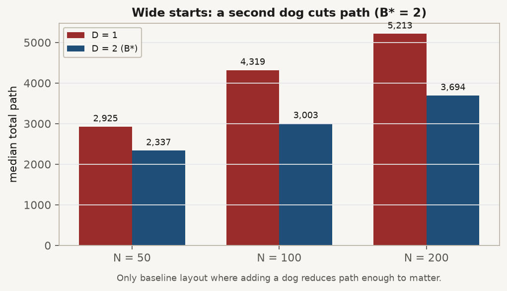

TÓM TẮT Nhìn nhanh
CÂU HỎI Giai đoạn 2 hỏi gì?
RQ1 / Gói B: cùng kích thước đàn N, X0 khác có đổi D_min (R >= 0.90) không?
- C1a: với ít nhất một N, D_min lệch ít nhất một bước lưới chó giữa các bố cục.
- C1b: mô hình trạng thái sớm dự đoán thành công tốt hơn (N, D) đơn thuần.
THIẾT KẾ Những gì bị khóa
| Lựa chọn | Giá trị |
|---|---|
| Phương pháp | chỉ strombom_multi |
| N (xác nhận) | 50, 100, 200 |
| Bố cục | bốn họ X0 (xem Bốn bố cục) |
| Lưới D / theta / T0 | như Giai đoạn 1 / 0.90 / 10,000 |
| Mẫu | dò 30; xác nhận 100 trên cửa sổ D=1 và D=2 (24 ô) |
THIẾT KẾ Bốn bố cục

Chỉ đổi kiểu xuất phát cừu X0. Sân, đích, chó, lưới N, lưới D, theta và T0 giữ khớp Giai đoạn 1 để hiệu ứng bố cục không lẫn với đổi sân. Đối chiếu chi phí và D_min nằm ở mục Kết quả.

| Bố cục | Định nghĩa generator | Vai trò trong thiết kế |
|---|---|---|
| compact | Gauss, sigma = 0.3 x 30 = 9 | Đàn gọn tham chiếu (hình học cơ sở Giai đoạn 1) |
| wide | Gauss, sigma = 2.0 x 30 = 60 | Đàn loãng cần gom trước |
| split | 2 cụm nếu N < 12, không thì 3; tách ít nhất 10 | Xuất phát cụm (bố cục kiểm tra) |
| outlier_rich | Lõi ~80% (sigma = 12); ~20% cá thể lạc ngoài r_a * N^(2/3) | Lõi cộng cá thể lạc |
CHẠY Cách đã chạy
- Thử nghiệm: 600 lượt.
- Dò đường: 3 N x 4 bố cục x 10 D x 30 = 3,600.
- Xác nhận: 24 ô x 100 = 2,400; hợp nhất 5,280 dòng; Gói B.
KẾT QUẢ Kết quả
D_min = 1 với cả 12 ô (bố cục, N); bootstrap độ rộng 0. Tại D = 1 mọi ô xác nhận có R = 1.00. Vậy cấu trúc không dịch biên tin cậy trên cơ sở; nó dịch chi phí.

| Bố cục | N | R tại D=1 | Bước trung vị | Đường trung vị |
|---|---|---|---|---|
| compact | 50 / 100 / 200 | 1.00 | 195 / 204 / 191 | 157 / 161 / 144 |
| split | 50 / 100 / 200 | 1.00 | 195 / 205 / 193 | 158 / 162 / 144 |
| outlier_rich | 50 / 100 / 200 | 1.00 | 224 / 501 / 1,228 | 209 / 554 / 1,647 |
| wide | 50 / 100 / 200 | 1.00 | 2,138 / 3,074 / 3,870 | 2,925 / 4,319 / 5,213 |
Nguồn: ../claim/merged_trials.csv (D = 1).
KẾT QUẢ B* trên wide
Trên xuất phát wide, B* = 2 (không phải 1) tại N = 50, 100 và 200: đường 2,337 so 2,925; 3,003 so 4,319; 3,694 so 5,213. Đó là bố cục cơ sở duy nhất nơi thêm một chó giảm quãng đường đủ rõ.

KHẲNG ĐỊNH C1a / C1b
| Kết luận | Đánh giá | Bằng chứng |
|---|---|---|
| C1a | BỊ BÁC BỎ | ../claim/packages/b/frontier_by_layout.csv: D_min = 1 cả 4 bố cục |
| C1b | KHÔNG RÕ RÀNG | Không dịch D_min; NLL Gói B không thông tin |
GIỚI HẠN Giới hạn
- Chỉ phương pháp cơ sở. Chuyển giao bộ điều khiển là Giai đoạn 4.
- Hiệu ứng sàn: D_min không xuống dưới 1 khi R = 1.00 tại D = 1.
- Bộ sinh split có thể không tạo bài toán đàn con cứng (CHƯA XÁC NHẬN).
TIẾP Tiếp
Giai đoạn 4 chuyển giao. Tổng hợp: ../../summary/SUMMARY_REPORT_vi.html.
PHỤ LỤC Dữ liệu thô
| Đường dẫn | Nội dung |
|---|---|
| ../claim/merged_trials.csv | Hợp nhất 5,280 dòng |
| ../claim/packages/b/ | Biên Gói B |
| ../claim/README.md | README thư mục |